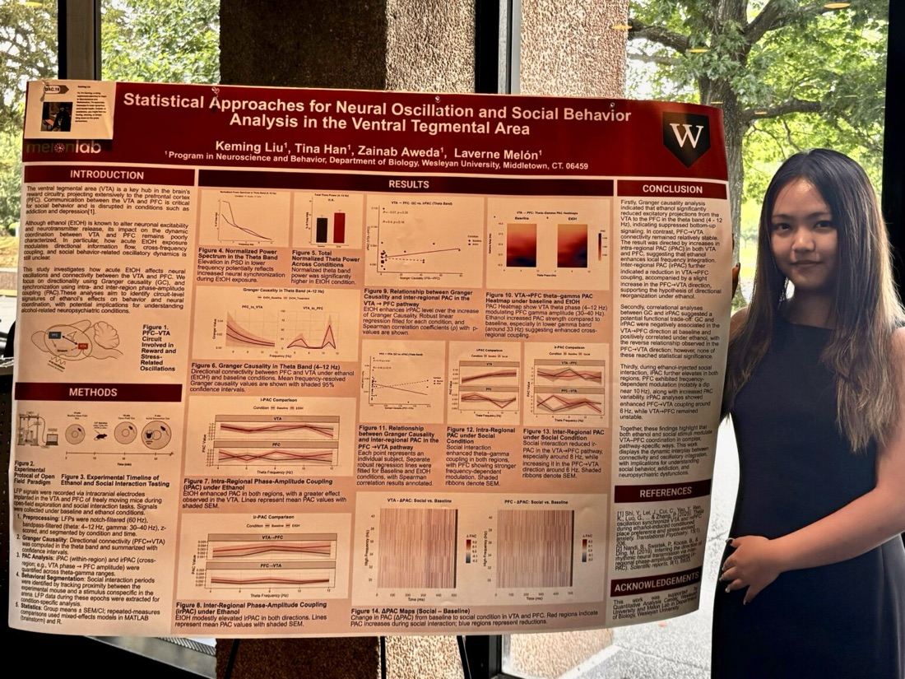

When the Workflow Starts to Hold
Making an analysis repeatable is not the same as making its interpretation right.
What a workflow can hold.
I usually know a workflow is improving when I stop being afraid to touch it. At the beginning of an analysis, one change can break something three steps later, and part of the logic may still live only in my memory. I like finding those fragile points and slowly making the path easier to follow, rerun, and revise.
In my neuroscience work, an analysis can move through Brainstorm, MATLAB, Python, and R before it becomes a figure. The difficult part is keeping track of what changed between steps and whether the final result still answers the biological question that started the analysis. When I revise a pipeline, I keep returning to that thread.
There is a kind of relief in making the procedure explicit. A decision that lives only in my memory is difficult for someone else to examine—and surprisingly difficult for me to question later. Once the steps are visible, I can return to a choice without reconstructing everything around it.
But that relief has a limit. Repeating an analysis tells me that the procedure holds together. It does not, by itself, tell me that I have chosen the right thing to measure. A well-organized workflow can carry an assumption just as efficiently as it carries data.
A workflow can hold.
An explanation
still has to earn it.
Keeping the question, not the answer.
At the Melón Lab, I had to reconsider whether activity in a single brain region could explain the behavioral differences I was interested in. My original analysis was not giving me the explanation I expected. I began to ask whether the relationship between regions might matter more than either region considered alone.
That was not simply another step to add to a pipeline. It changed what I was asking the analysis to do. The question was still worth pursuing, but pursuing it meant becoming less attached to the form I had first given it.
I approach machine-learning results in a similar way. A score alone does not tell me enough; I want to know what the model seems to be using, how stable that pattern is, and what the figure might tempt a reader to conclude too quickly. In creativity scoring, examining a model’s judgments led me back to a question about the task itself: what had the model learned to recognize as creativity?
Interpretation, then, is not only something I add after an analysis is finished. It can send me backward—to a comparison, a measurement, or a definition I had treated as settled.

Clarity is also a responsibility.
Making the final figure brings these questions together. I ask what someone will notice first, which comparison should be easy, and where I still owe them an explanation. A figure has to simplify, but the simplification is a choice. What does its neatness help a reader see, and what might it make too easy to believe?
This is what I want a workflow to make possible: not an uninterrupted path to a conclusion, but a way to retrace the path when the conclusion needs questioning. I want the analysis to be sturdy enough that changing my mind does not mean starting from nothing.